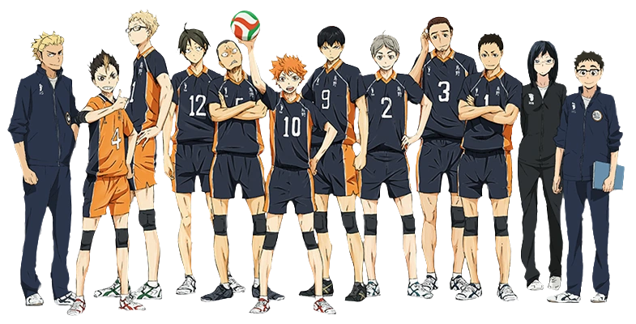

<h1>Karasuno</h1>



<h2>About this team:</h2>

<p><h3>School: </h3>Karasuno High (Japanese: 烏野からすの高校こうこう Karasuno Kōkō)</p>

<p><h3>Mascot: </h3>This team's unofficial mascot is the crow. The team's colors are black and orange.</p>


<h2>Members in this team:</h2>
<ul>
    <li><a a href="./link/Shoyo_Hinata.html" >  Shoyo Hinata</a> </li>
    <li><a a href="./link/Tobio_Kageyama.html">Tobio Kageyama </a> </li>
    <li> <a a href="./link/Kei_Tsukishima.html">Kei Tsukishima </a></li>
    <li><a a href="./link/Tadashi_Yamaguchi.html">Tadashi Yamaguchi </a></li>
    <li><a a href="./link/Daichi_Sawamura.html">Daichi Sawamura</a></li>
    <li><a a href="./link/Koshi_Sugawara.html">Koshi Sugawara</a></li>
    <li><a a href="./link/Yu_Nishinoya.html">Yu Nishinoya</a></li>
    <li><a a href="./link/Asahi_Azumane.html">Asahi Azumane</a></li>
    <li><a a href="./link/Ryunosuke_Tanaka.html">Ryunosuke Tanaka</a></li>
    <li><a a href="./link/Chikara_Ennoshita.html">Chikara 0Ennoshita</a></li>
    <li><a a href="./link/Kazuhito_Narita.html">Kazuhito Narita</a></li>
    <li><a a href="./link/Hisashi_Kinoshita.html">Hisashi Kinoshita</a></li>
    <li><a a href="./link/Ittetsu_Takeda.html">Ittetsu Takeda</a></li>
    <li><a a href="./link/Keishin_Ukai.html">Keishin Ukai</a></li>
    <li><a a href="./link/Kiyoko_Shimizu.html">Kiyoko Shimizu</a></li>
    <li><a a href="./link/Hitoka_Yachi.html">Hitoka Yachi</a></li>
    
</ul>